Animali e natura
11 schede in italiano sul tema «Animali e natura», pronte da stampare e con soluzioni.
11 materiali
Classe
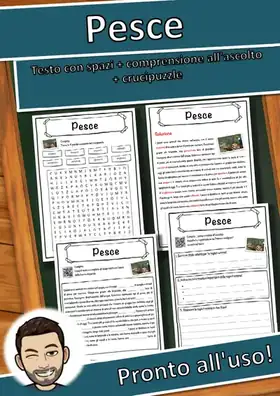
Pesce – Scheda: testo con spazi vuoti, comprensione all'ascolto e crucipuzzle
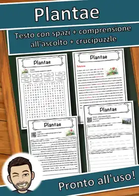
Plantae – Scheda: testo con spazi vuoti, comprensione all'ascolto e crucipuzzle
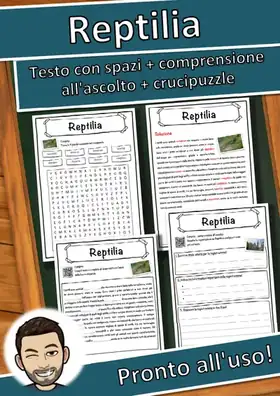
Reptilia – Scheda: testo con spazi vuoti, comprensione all'ascolto e crucipuzzle
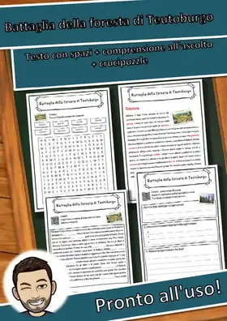
Battaglia della foresta di Teutoburgo – Scheda: testo con spazi vuoti, comprensione all'ascolto e crucipuzzle
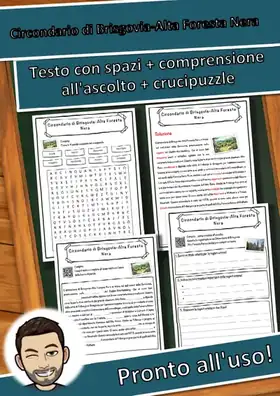
Circondario di Brisgovia-Alta Foresta Nera – Scheda: testo con spazi vuoti, comprensione all'ascolto e crucipuzzle
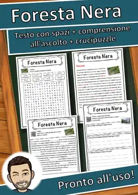
Foresta Nera – Scheda: testo con spazi vuoti, comprensione all'ascolto e crucipuzzle
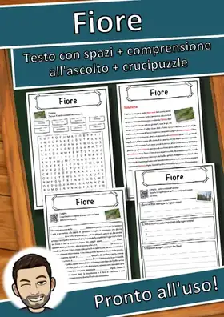
Fiore – Scheda: testo con spazi vuoti, comprensione all'ascolto e crucipuzzle
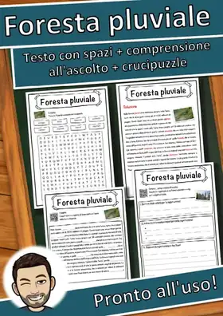
Foresta pluviale – Scheda: testo con spazi vuoti, comprensione all'ascolto e crucipuzzle
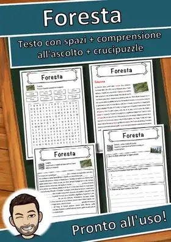
Foresta – Scheda: testo con spazi vuoti, comprensione all'ascolto e crucipuzzle
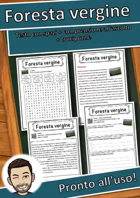
Foresta vergine – Scheda: testo con spazi vuoti, comprensione all'ascolto e crucipuzzle
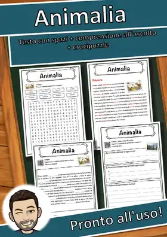
Animalia – Scheda: testo con spazi vuoti, comprensione all'ascolto e crucipuzzle
Nessun materiale trovato: prova con un'altra parola o un altro filtro.